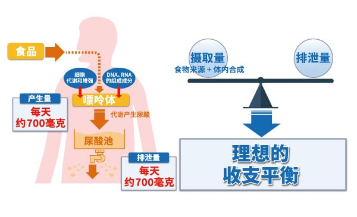
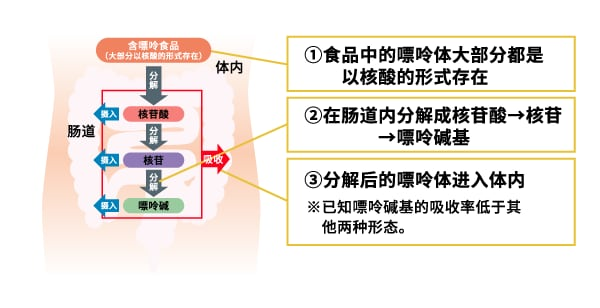

什么是嘌呤？
人体为什么需要嘌呤呢？
也许很多人认为嘌呤对身体不好，其实它是生物细胞中所含遗传因子的组成成分，是生命活动所必需的物质。我们通过日常的饮食来摄取嘌呤，但不仅限于饮食，实际上嘌呤的8成（每天约500mg）是在体内产生的。
体内的嘌呤被用于细胞的代谢和繁殖等。未被利用的一部分嘌呤，则作为尿酸排出体外。嘌呤虽然为生命活动所必需，但是过量摄取的话，不仅会导致血清尿酸值的上升，还会导致高尿酸血症和痛风发病风险的上升等。

关于嘌呤的分解
食品中所含的嘌呤，其大部分都作为核酸存在。核酸在肠道内被分解成核苷酸，而核苷酸又被分解成核苷和嘌呤碱。在这一分解过程中，嘌呤被吸收到体内。嘌呤碱与核苷酸、核苷相比，难以在体内吸收。
